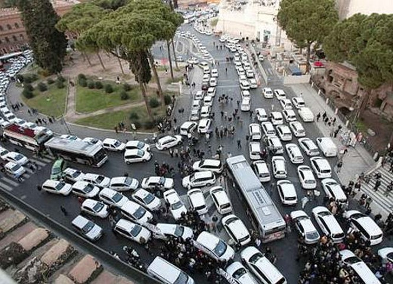
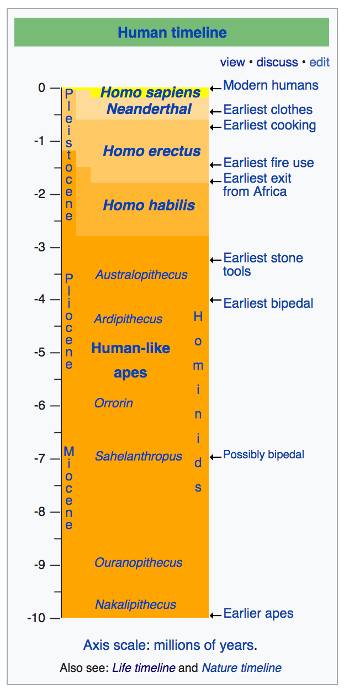
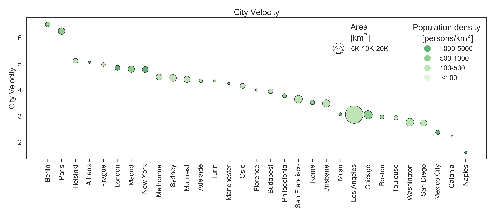
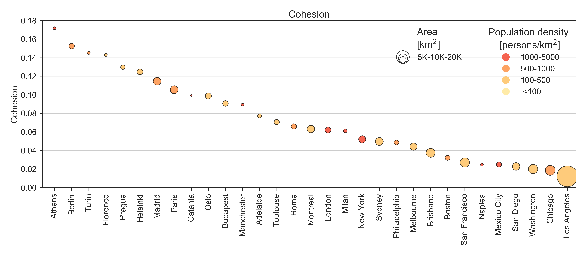
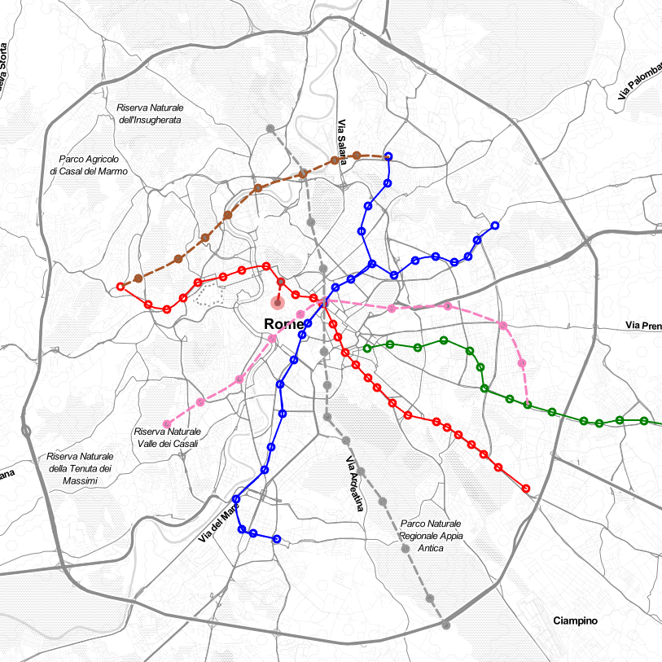
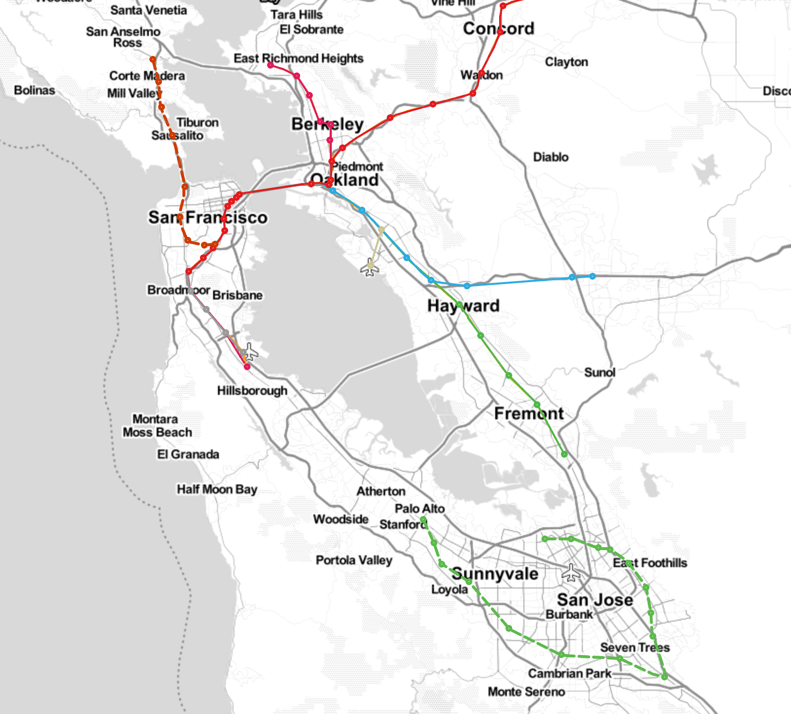
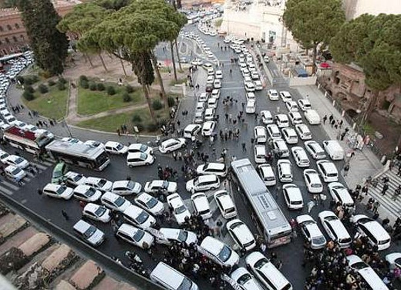
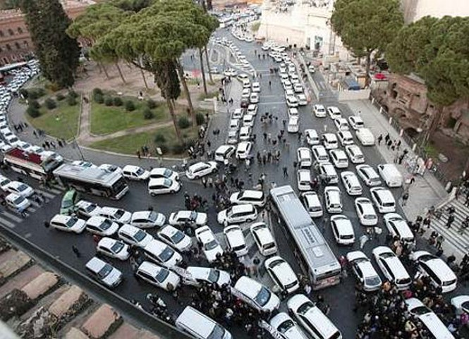

Your browser doesn't support the features required by impress.js, so you are presented with a simplified version of this presentation.
For the best experience please use the latest Chrome , Safari or Firefox browser.
Indaco Biazzo
Università "La Sapienza" - Rome
Motivation:
1 - Scientific results dissemination strategy.
One really has to write a “manuscript” (format invented in late 16th century) to publish scientific results on 11 July 2017?
Over-specialization in science
Absorption of the scientific results by the society
Data and scientific visualizations.
Typically the techno-social studies want to have an impact on the society.
Motivation:

Rome public transport sucks.
Ok. But how much compared to the other cities?
Where I have to live in Rome?
Or better, in which city it's possible to leave the car at home?
C ityC hron e
Expansion
credits: bighistoryproject.com

Urbanization and cities:
The history of foundation.
Created by: @galka_max
Data, visualizations, algorithms
Algorithms - routing
Walking routing - OSRM
New public transport routing alogrithms -
CSA ,
RAPTOR
C ityC hron eScience for City
Boundaries and Tessellation.
We can compute isochrones.
Velocity Score:
Consider the Area of the Isochrone a time \(t\) computed in \(P\):
\begin{equation}
r(t,P) = \sqrt{\frac{A(t, P)}{\pi}}
\end{equation}
dividing by time, we obtain a quantity with the dimension of a velocity:
\begin{equation}
v(t,P) = \frac{r(t,P)}{t}
\end{equation}
Integrating over time:
\begin{equation}
v_{score}(P) = \int_0^{\infty} v(t, P) f(2t) dt,
\end{equation}
\(f(t)^1\) is the daily time budget distribution for public transport.
\(^1\) Robert Kölbl, Dirk Helbing. Energy laws in human travel behaviour. New Journal of Physics 5, 48 IOP Publishing, 2003.
Sociality Score:
Consider the populations inside the Isochrone a time \(t\) computed in \(P\):
\begin{equation}
s(t,P) = \sum_{i \mid t_i(P) < t} p(h_i),
\end{equation}
we sum over all the hexagons with time \(t_i\) less than \(t\) and \(p(h_i)\) is the population within \(h_i\).
\begin{equation}
s(P) = \int_0^{\infty} s(t,P)f(2t)dt,
\end{equation}
\(f(t)^1\) is the daily time budget distribution for public transport.
\(^1\) Robert Kölbl, Dirk Helbing. Energy laws in human travel behaviour. New Journal of Physics 5, 48 IOP Publishing, 2003.
Sociality Score quantifies how many citizens it is possible to reach with a " typical trip" starting from somewhere in the city
City Rankings
City Velocity
Velocity Score per person

City Sociality
Sociality Score per person
Cohesion
City Sociality divided by total population

C ityC hron eCitizen for Science
New public transport scenario
How to improve the efficiency of public transport?
What is the best intervention given a budget?


Using users mind and computational resources
Prior knowledge of users.
Client-side computations.
Gamification aspect.
Your browser does not support the video tag.
Your browser does not support the video tag.
The future of public transports in cities Bad ending for my current research, but happing ending for public transport in the cities?
Cars per 1000 inhabitants
Italy togheter with USA has the highest level of car ownership.
Italy
cars
Europe
cars
Rome
800
Paris
225
Milan
596
London
298
Turin
600
Barcellona
350
Catania
700
Berlin
297
Average person per car 1.2
95% of the time the cars are parked
Self driving cars (they are around us)
No property - No Parking
Boost in efficency
Sharing Trips
from taxy sharing to trip sharing\(^{1,2,3}\)
At least 50% less cars circulating
Public transport on demand
shrinking of the cost urban transportation of almost 10 times.
 
